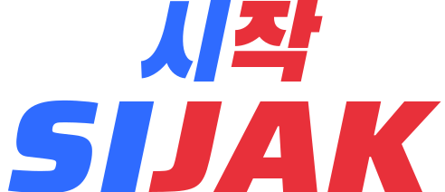

Taekwondo sparring scoring for schools and in-house events.
Sijak runs on a computer or a Raspberry Pi at your school. Judges score from phones or game controllers, the operator runs the match from a laptop or tablet, and the scoreboard shows on a TV, all over your own Wi-Fi.
Sijak can save backups of your players, match records and settings to your own Google Drive, in a folder called "Sijak backups". Sijak can only see the files it creates there, nothing else in your Drive. See the privacy policy.